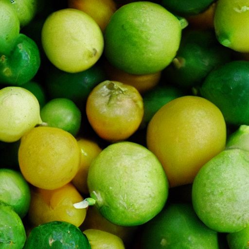
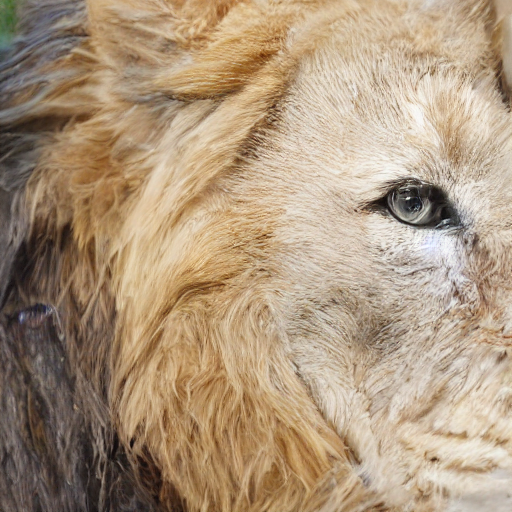
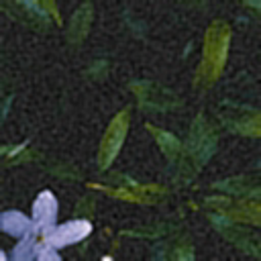
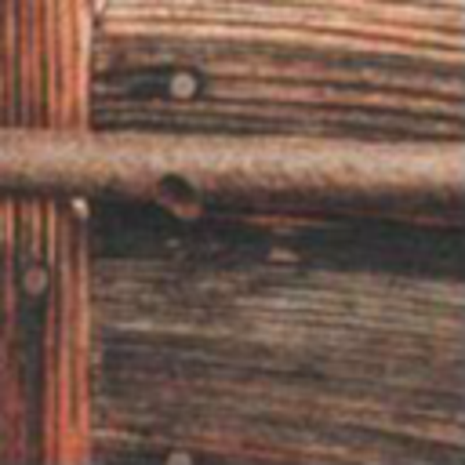

In this work, we leverage the complementary strengths of Diffusion Models (DMs), Flow Matching models (FMs), and Variational AutoEncoders (VAEs): the diversity of stochastic DMs, the speed of FMs in training and inference stages, and the efficiency of a convolutional decoder to map latents into pixel space. This synergy results in a small diffusion model that excels in generating diverse samples at a low resolution. Flow Matching then takes a direct path from this lower-resolution representation to a higher-resolution latent, which is subsequently translated into a high-resolution image by a convolutional decoder. We achieve competitive high-resolution image synthesis at $1024^2$ and $2048^2$ pixels with minimal computational cost.
During training we feed both a low- and a high-res image through the pre-trained encoder to obtain a low- and a high-res latent code. Our model is trained to regress a vector field which forms a probability path from the low- to the high-res latent within $t \in [0, 1]$. During inference we can take any diffusion model, generate the low-res latent, and then use our coupling flow matching model to synthesize the higher dimensional latent code. Finally, the pre-trained decoder projects the latent code back to pixel space.

We show quantitative comparison of our methods zero-shot with several state-of-the-art methods on two datasets. Bold numbers are the best, underscored second best. Our method achieves a good trade-off between performance and computational cost.
While our main goal is to be a plug-and-play method for boosting the resolution of diffusion models, our method can also be generalized for super-resolution tasks, where the low-res images are degraded with e.g., JPEG artifacts. In the table below we show that our method also excels in this task, achieving competitive results on two standard benchmark datasets.
Refer to the pdf paper linked above for more details on qualitative, quantitative, and ablation studies.
@misc{fischer2023boosting,
title={Boosting Latent Diffusion with Flow Matching},
author={Johannes Schusterbauer-Fischer and Ming Gui and Pingchuan Ma and Nick Stracke and Stefan A. Baumann and Vincent Tao Hu and Björn Ommer},
year={2023},
eprint={2312.07360},
archivePrefix={arXiv},
primaryClass={cs.CV}
}